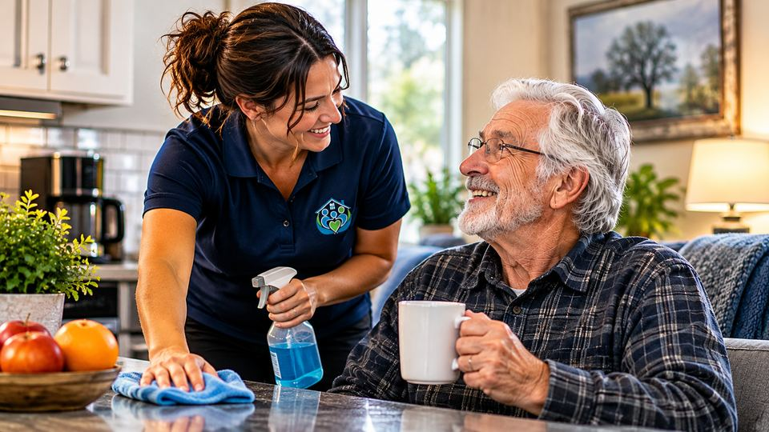
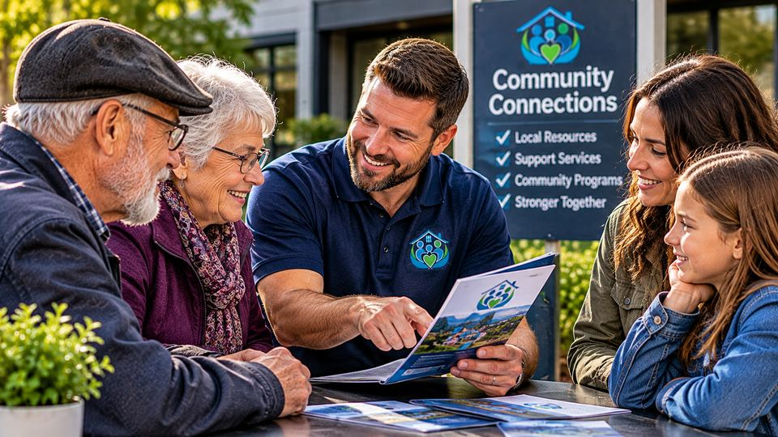
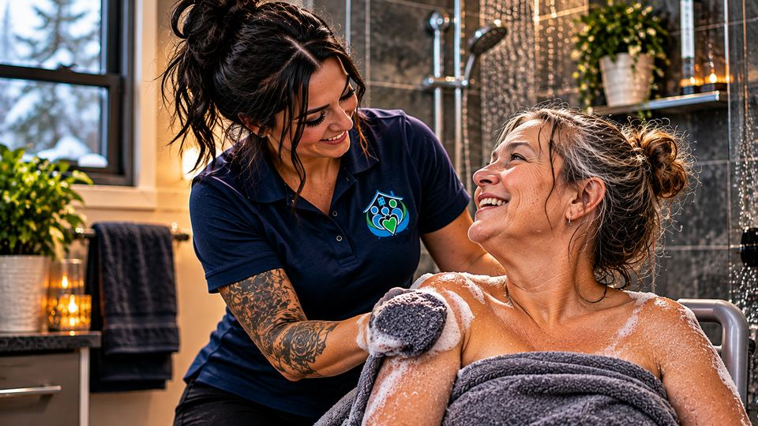

Our Services
Personalized support. Real-life solutions.
What we offer

Home Support
Help with daily living, household tasks, meal prep, grocery pick-up, and home management.
Learn More
Community Connections
Connecting individuals with services, programs and opportunities in their community.
Learn More
Personal Care
Compassionate, individual care built around your unique health and everyday living needs.
Learn More